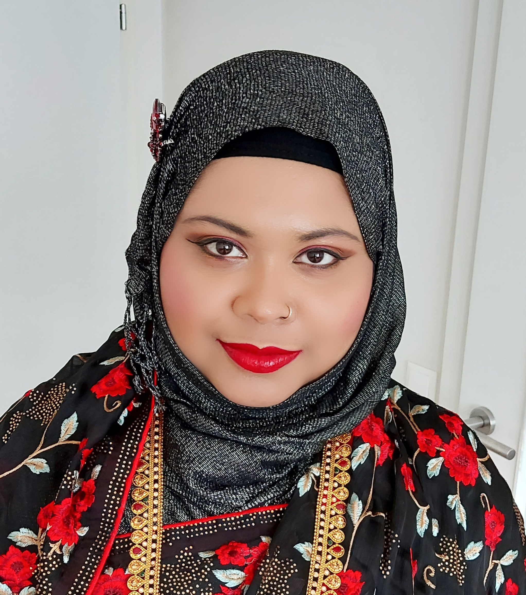
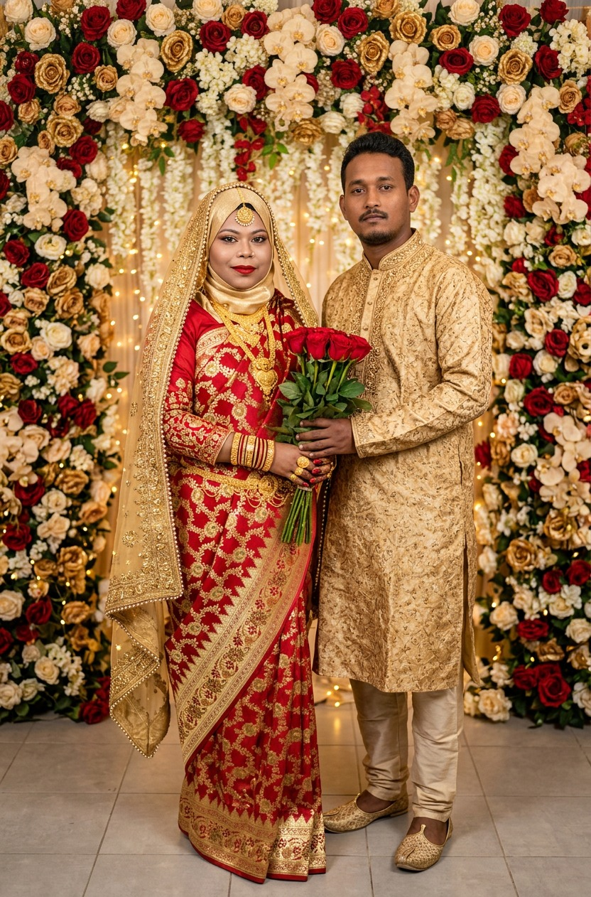

Mein Name ist Linda Humayun-Arfin. Ursprünglich komme ich aus Bangladesch, genauer gesagt aus dem Dorf Darikandi. Außerdem bin ich Muslimin. Im Alter von neun Jahren übersiedelte ich nach Österreich, wo ich zunächst für kurze Zeit die Volksschule besuchte.
Im Jahr 2008 legte ich meine Matura am BORG Dreierschützengasse ab. Anschließend absolvierte ich mehrere Aus- und Weiterbildungen, darunter die Unternehmerprüfung sowie Qualifikationen als Kinderbetreuerin und Tagesmutter. Im Jahr 2024 vertiefte ich zudem meine Kenntnisse im Bereich Webdesign. Kurz danach begann ich, mich intensiv mit Tajweed auseinanderzusetzen. Dabei handelt es sich um Regeln, die eine korrekte und originalgetreue Rezitation des Korans ermöglichen.
Derzeit studiere ich an der FH CAMPUS 02 in Graz im Studiengang Business Software Development. Parallel dazu absolviere ich online ein zweijähriges Diplom in Islamischer Bildung an der Zad Academy in englischer Sprache.
Ich liebe es, mein Wissen zu erweitern. Ich studiere Business Software Development, weil es mein Kindheitstraum ist, Ingenieurin zu werden. Gleichzeitig lerne ich an der Zad Academy, weil ich mir viel Wissen über meine Religion, den Islam aneignen möchte.
Mein Ziel ist es, dieses Wissen später an meine Kinder weiterzugeben. Mein größter Traum ist es, Hafiza zu werden (den Koran auswendig zu können) und das Wissen einer Alima (einer islamischen Gelehrten) zu erlangen.
Mein Studium findet in Präsenz statt, während ich mein Diplom online absolviere, was mir eine gewisse Flexibilität ermöglicht. Trotz Studium und Kindern schaffe ich es, alles gut zu organisieren. Das gelingt mir durch viel Willenskraft, Ausdauer, Disziplin und Geduld.
Im Jahr 2011 habe ich meinen Traummann geheiratet. Es war eine arrangierte Hochzeit. Diese Entscheidung traf ich bewusst, um mich zu schützen. Als Muslimin kam für mich eine Beziehung vor der Ehe nicht infrage, daher überließ ich meinen Eltern die Wahl meines zukünftigen Mannes.
Zugleich nannte ich ihnen klare Kriterien, die mir besonders wichtig waren. An erster Stelle stand der Glaube. Mein Ehemann sollte Muslim sein, fünfmal am Tag beten und ein praktizierendes Leben führen. Ebenso legte ich Wert darauf, dass er vor der Ehe keine Beziehung hatte.
Natürlich achtete meine Familie zusätzlich auf Herkunft, Bildung und weitere Aspekte.
Außerdem war es eine lebenswichtige Entscheidung, die ich auf keinen Fall alleine treffen wollte. Zudem stand ich der Liebesehe kritisch gegenüber. Aufgrund meiner sanften, mitfühlenden und emotionalen Art war mir bewusst, wie leicht man mich hätte täuschen oder ausnutzen können. Genau davor wollte ich mich bewahren.
Der Beginn unserer Ehe war herausfordernd. Plötzlich das eigene Leben mit einem anderen Menschen zu teilen, verlangte viel Anpassung. Gleichzeitig wollte ich nicht allein bleiben. Es erforderte Geduld, Einsatz und zahlreiche Kompromisse. Mit der Zeit verstand ich, dass Nachgiebigkeit allein nicht genügt.
Deshalb musste ich lernen, meine Rechte klar zu vertreten. Auf diese Weise entwickelte ich mich innerlich weiter und vertrete meine Ansichten heute selbstbewusst.
Heute sind wir immer noch zusammen – nicht nur wegen der Kinder oder aus Pflichtgefühl, sondern weil wir Verantwortung füreinander tragen. Unsere Beziehung lässt sich gut mit dem indischen Lied „Teri Meri Prem Kahani“ („Unsere Liebesgeschichte“) vergleichen.
